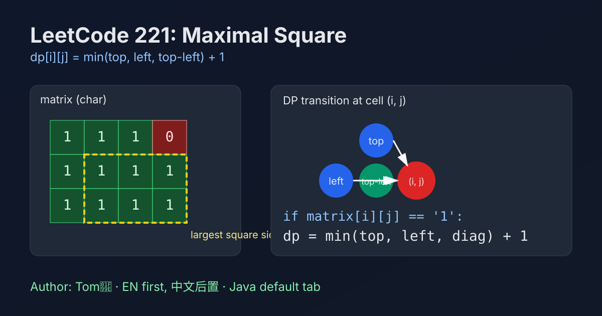

LeetCode 221: Maximal Square (2D DP Transition)
LeetCode 221MatrixDPInterviewToday we solve LeetCode 221 - Maximal Square.
Source: https://leetcode.com/problems/maximal-square/

English
Problem Summary
Given a binary matrix filled with characters '0' and '1', find the area of the largest square containing only '1's.
Key Insight
Let dp[i][j] be the side length of the largest all-1 square whose bottom-right corner is at (i, j). If matrix[i][j] == '1', then:
dp[i][j] = min(dp[i-1][j], dp[i][j-1], dp[i-1][j-1]) + 1
Because to extend a square by one layer, top, left, and top-left neighbors must all support that size.
Brute Force and Limitations
A brute approach tries every cell as top-left and expands side length while validating all cells in candidate squares. This causes heavy repeated checks and can degrade to O(mn * min(m,n)^2).
Optimal Algorithm Steps
1) Create dp[m][n] initialized to 0 and maxSide = 0.
2) Iterate all cells.
3) If current cell is '1': if on first row/col, dp=1; else apply the transition above.
4) Update maxSide each step.
5) Return maxSide * maxSide.
Complexity Analysis
Time: O(mn), one pass over matrix.
Space: O(mn) for DP table (can be optimized to O(n)).
Common Pitfalls
- Returning side length instead of area.
- Forgetting first row/first column initialization logic.
- Applying transition when current cell is '0' (must stay 0).
- Mixing char '1' with integer 1 in languages like Java/C++.
Reference Implementations (Java / Go / C++ / Python / JavaScript)
class Solution {
public int maximalSquare(char[][] matrix) {
int m = matrix.length, n = matrix[0].length;
int[][] dp = new int[m][n];
int maxSide = 0;
for (int i = 0; i < m; i++) {
for (int j = 0; j < n; j++) {
if (matrix[i][j] == '1') {
if (i == 0 || j == 0) {
dp[i][j] = 1;
} else {
dp[i][j] = Math.min(dp[i - 1][j], Math.min(dp[i][j - 1], dp[i - 1][j - 1])) + 1;
}
maxSide = Math.max(maxSide, dp[i][j]);
}
}
}
return maxSide * maxSide;
}
}func maximalSquare(matrix [][]byte) int {
m, n := len(matrix), len(matrix[0])
dp := make([][]int, m)
for i := range dp {
dp[i] = make([]int, n)
}
maxSide := 0
for i := 0; i < m; i++ {
for j := 0; j < n; j++ {
if matrix[i][j] == '1' {
if i == 0 || j == 0 {
dp[i][j] = 1
} else {
a := dp[i-1][j]
b := dp[i][j-1]
c := dp[i-1][j-1]
minVal := a
if b < minVal {
minVal = b
}
if c < minVal {
minVal = c
}
dp[i][j] = minVal + 1
}
if dp[i][j] > maxSide {
maxSide = dp[i][j]
}
}
}
}
return maxSide * maxSide
}class Solution {
public:
int maximalSquare(vector<vector<char>>& matrix) {
int m = (int)matrix.size(), n = (int)matrix[0].size();
vector<vector<int>> dp(m, vector<int>(n, 0));
int maxSide = 0;
for (int i = 0; i < m; ++i) {
for (int j = 0; j < n; ++j) {
if (matrix[i][j] == '1') {
if (i == 0 || j == 0) {
dp[i][j] = 1;
} else {
dp[i][j] = min({dp[i - 1][j], dp[i][j - 1], dp[i - 1][j - 1]}) + 1;
}
maxSide = max(maxSide, dp[i][j]);
}
}
}
return maxSide * maxSide;
}
};from typing import List
class Solution:
def maximalSquare(self, matrix: List[List[str]]) -> int:
m, n = len(matrix), len(matrix[0])
dp = [[0] * n for _ in range(m)]
max_side = 0
for i in range(m):
for j in range(n):
if matrix[i][j] == "1":
if i == 0 or j == 0:
dp[i][j] = 1
else:
dp[i][j] = min(dp[i - 1][j], dp[i][j - 1], dp[i - 1][j - 1]) + 1
max_side = max(max_side, dp[i][j])
return max_side * max_sidevar maximalSquare = function(matrix) {
const m = matrix.length;
const n = matrix[0].length;
const dp = Array.from({ length: m }, () => Array(n).fill(0));
let maxSide = 0;
for (let i = 0; i < m; i++) {
for (let j = 0; j < n; j++) {
if (matrix[i][j] === '1') {
if (i === 0 || j === 0) {
dp[i][j] = 1;
} else {
dp[i][j] = Math.min(dp[i - 1][j], dp[i][j - 1], dp[i - 1][j - 1]) + 1;
}
maxSide = Math.max(maxSide, dp[i][j]);
}
}
}
return maxSide * maxSide;
};中文
题目概述
给定一个仅包含 '0' 和 '1' 的二维矩阵，求只包含 '1' 的最大正方形面积。
核心思路
定义 dp[i][j] 为“以 (i,j) 作为右下角时，最大全 1 正方形的边长”。当 matrix[i][j] == '1' 时：
dp[i][j] = min(dp[i-1][j], dp[i][j-1], dp[i-1][j-1]) + 1
因为想把边长扩 1，左、上、左上这三个方向都必须至少支撑同样大小。
暴力解法与不足
暴力方法会枚举每个起点并不断尝试扩大边长，同时检查候选正方形所有格子是否全为 1。重复检查很多，最坏会到 O(mn * min(m,n)^2)。
最优算法步骤
1）初始化 dp 与 maxSide。
2）遍历矩阵每个格子。
3）若当前是 '1'：第一行/第一列边长为 1，否则按转移式更新。
4）同步维护最大边长。
5）最终返回 maxSide * maxSide。
复杂度分析
时间复杂度：O(mn)。
空间复杂度：O(mn)（可滚动优化到 O(n)）。
常见陷阱
- 返回了最大边长，而不是面积。
- 忘记处理第一行/第一列的初始化。
- 当前格子是 '0' 时仍套转移公式。
- 字符 '1' 与整数 1 混淆。
多语言参考实现（Java / Go / C++ / Python / JavaScript）
见上方 tabs，可直接切换与复制。
Comments